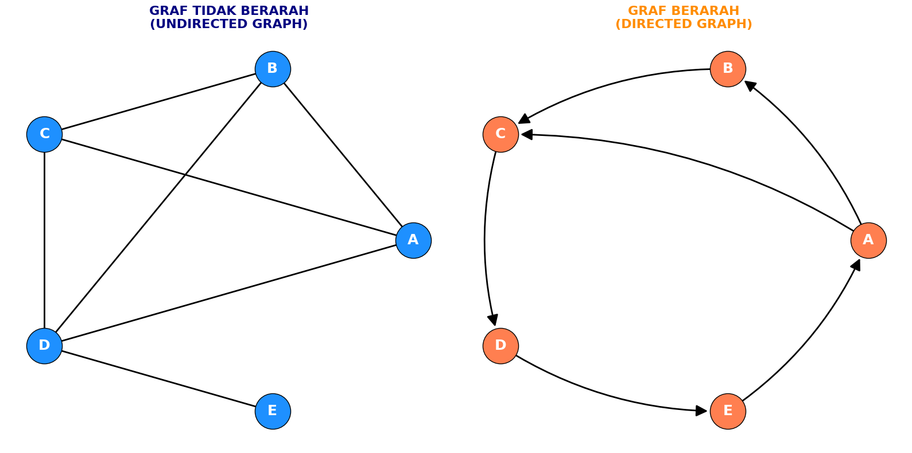

Graph Analysis
Membuat Graph Berarah dan Tidak Berarah Menggunakan NetworkX
Pada tahapan ini dilakukan pemodelan dan visualisasi struktur graf menggunakan pustaka NetworkX dan Matplotlib. Pemodelan mencakup Graf Tidak Berarah (Undirected Graph) dan Graf Berarah (Directed Graph) dengan 5 simpul (A, B, C, D, E).
▶
import networkx as nx
import matplotlib.pyplot as plt
# Definisi simpul (vertices)
nodes = ['A', 'B', 'C', 'D', 'E']
# 1. MEMBUAT GRAF TIDAK BERARAH (Undirected)
G_undirected = nx.Graph()
G_undirected.add_nodes_from(nodes)
edges_undirected = [('A', 'B'), ('A', 'C'), ('A', 'D'),
('B', 'C'), ('B', 'D'),
('C', 'D'), ('D', 'E')]
G_undirected.add_edges_from(edges_undirected)
# 2. MEMBUAT GRAF BERARAH (Directed / DiGraph)
G_directed = nx.DiGraph()
G_directed.add_nodes_from(nodes)
edges_directed = [('A', 'B'), ('A', 'C'),
('B', 'C'),
('C', 'D'),
('D', 'E'),
('E', 'A')]
G_directed.add_edges_from(edges_directed)
# Fungsi untuk visualisasi berdampingan
def draw_graphs(G_undir, G_dir):
fig, axes = plt.subplots(1, 2, figsize=(16, 8))
# Layout melingkar agar posisi simpul konsisten
pos = nx.circular_layout(nodes)
# Kustomisasi visual
node_size = 2000
font_size = 18
font_color = 'white'
# --- Gambar Graf Tidak Berarah (Kiri) ---
axes[0].set_title("GRAF TIDAK BERARAH\n(UNDIRECTED GRAPH)", fontsize=16, fontweight='bold', color='navy')
nx.draw_networkx_nodes(G_undir, pos, ax=axes[0], node_color='dodgerblue', node_size=node_size, edgecolors='black')
nx.draw_networkx_labels(G_undir, pos, ax=axes[0], font_size=font_size, font_color=font_color, font_weight='bold')
nx.draw_networkx_edges(G_undir, pos, ax=axes[0], edge_color='black', width=2)
axes[0].axis('off')
# --- Gambar Graf Berarah dengan Panah Jelas (Kanan) ---
axes[1].set_title("GRAF BERARAH\n(DIRECTED GRAPH)", fontsize=16, fontweight='bold', color='darkorange')
nx.draw_networkx_nodes(G_dir, pos, ax=axes[1], node_color='coral', node_size=node_size, edgecolors='black')
nx.draw_networkx_labels(G_dir, pos, ax=axes[1], font_size=font_size, font_color=font_color, font_weight='bold')
# Menambahkan panah dengan lengkungan (connectionstyle) & margin agar tidak tertutup simpul
nx.draw_networkx_edges(
G_dir, pos, ax=axes[1],
edge_color='black', width=2,
arrowstyle='-|>', arrowsize=30,
connectionstyle='arc3,rad=0.15',
min_target_margin=25
)
axes[1].axis('off')
plt.tight_layout()
plt.show()
# Jalankan fungsi visualisasi
draw_graphs(G_undirected, G_directed)Output
